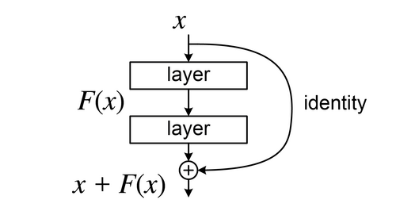

Una red neuronal residual, también conocida como ResNet (del inglés Residual Network), es un modelo de aprendizaje profundo en el que las capas de pesos aprenden funciones residuales con referencia a las entradas de las capas. Se distingue de las redes neuronales convencionales por la incorporación de conexiones de salto (skip connections) que conectan directamente la entrada de un bloque de capas con su salida, sin pasar por las transformaciones intermedias.
Estas conexiones de salto realizan lo que se llama un mapeo de identidad: simplemente suman la entrada original a la salida transformada del bloque. Esta aparentemente pequeña modificación tuvo un impacto enorme en el campo del aprendizaje profundo, ya que permitió entrenar redes con decenas, centenas e incluso miles de capas de manera estable y eficiente, algo que era prácticamente imposible antes de su introducción.
Las ResNet son actualmente uno de los modelos más influyentes en la historia del aprendizaje profundo. Sus conexiones residuales no solo se usan en visión por computadora, sino que son un componente fundamental de los Transformers, la arquitectura que impulsa a los modelos de lenguaje modernos como GPT, BERT y Claude.
Para entender por qué las redes residuales son importantes, es necesario comprender el problema que venían a resolver: la degradación de las redes neuronales profundas.
En teoría, una red neuronal más profunda (con más capas) debería ser capaz de aprender representaciones más complejas y obtener mejores resultados que una red más superficial. Si las capas adicionales no aportaran nada, lo peor que podría ocurrir es que simplemente copiaran la entrada tal cual, sin modificarla (función identidad), obteniendo el mismo resultado que la red más pequeña.
Sin embargo, en la práctica se observó lo contrario: a partir de cierta profundidad, agregar más capas empeoraba el rendimiento, incluso en los datos de entrenamiento. Este fenómeno, llamado problema de la degradación, no se debía al sobreajuste sino a dificultades en la optimización: los algoritmos de entrenamiento no lograban ajustar correctamente los pesos en redes muy profundas.
Por ejemplo, el modelo AlexNet de 2012 tenía 8 capas. Las redes VGG desarrolladas en 2014 por la Universidad de Oxford llegaron a 19 capas, pero al intentar profundizar más allá de eso, la precisión comenzaba a caer. El problema de la degradación fue la motivación directa para el desarrollo de las redes residuales.
Las redes neuronales residuales fueron desarrolladas por Kaiming He, Xiangyu Zhang, Shaoqing Ren y Jian Sun, investigadores de Microsoft Research Asia. Su artículo "Deep Residual Learning for Image Recognition" fue presentado en 2015 y se convirtió en uno de los trabajos más citados en la historia de la inteligencia artificial.
El equipo ganó el concurso ImageNet Large Scale Visual Recognition Challenge (ILSVRC) de 2015 con una red de 152 capas, superando ampliamente a todos los competidores y logrando una tasa de error top-5 del 3,57%, por debajo del error humano estimado en esa tarea. Este resultado demostró de manera contundente que la idea del aprendizaje residual funcionaba.
Cabe mencionar que la idea de las conexiones de salto no era completamente nueva. Las redes LSTM, propuestas en 1997 por Hochreiter y Schmidhuber para el procesamiento de secuencias, ya utilizaban un mecanismo similar internamente. Sin embargo, He et al. fueron los primeros en formalizar y aplicar sistemáticamente este concepto a redes convolucionales profundas, demostrando su efectividad a gran escala.
El trabajo tuvo un impacto inmediato y duradero en el campo. A partir de 2015, las conexiones residuales se convirtieron en un componente estándar en el diseño de redes neuronales profundas, y su influencia se extendió rápidamente más allá de la visión por computadora hacia el procesamiento del lenguaje natural y otras áreas.
El mecanismo central de una red residual es la conexión de salto (skip connection), también llamada conexión residual o atajo (shortcut). En una red neuronal convencional, la información fluye únicamente de una capa a la siguiente de forma secuencial. En una red residual, la entrada de un bloque de capas también se conecta directamente a la salida de ese bloque, sumándose al resultado transformado.
Esta conexión directa permite que la información fluya sin obstáculos a través de la red, incluso saltando varias capas. Si las capas intermedias aprenden una función poco útil o incluso negativa, la conexión de salto garantiza que al menos la señal original llegue sin degradarse a las capas más profundas. En el peor caso, la red puede simplemente aprender a ignorar las capas intermedias, haciendo que la función residual sea cero y dejando solo la identidad.
La unidad básica de una red residual es el bloque residual. En lugar de aprender directamente la función subyacente que transforma la entrada en la salida deseada, las capas del bloque aprenden la diferencia (o residuo) entre esa función y la identidad. Si llamamos F(x) a lo que aprenden las capas y x a la entrada, la salida del bloque es F(x) + x.
Existen dos variantes principales de bloques residuales:
Una red residual profunda se construye apilando una serie de estos bloques residuales en secuencia. La profundidad de la red (número de capas) se puede aumentar enormemente sin los problemas de degradación que afectaban a las arquitecturas anteriores.
Otro beneficio importante de las conexiones residuales es su efecto positivo sobre el flujo del gradiente durante el entrenamiento. En redes muy profundas sin conexiones de salto, el gradiente calculado durante la retropropagación tiende a hacerse extremadamente pequeño a medida que se propaga hacia las capas iniciales, un fenómeno conocido como desvanecimiento del gradiente. Esto impide que las capas más cercanas a la entrada aprendan correctamente.
Las conexiones de salto crean caminos alternativos por los que el gradiente puede fluir directamente hacia capas más tempranas sin atenuarse tanto. Matemáticamente, la derivada de la función de pérdida respecto a una capa temprana siempre incluye un término que viene directamente de la conexión de identidad, lo que garantiza que el gradiente no desaparezca completamente sin importar la profundidad de la red.
Desde la ResNet original de 2015, se han desarrollado numerosas variantes y modelos derivados que extienden o mejoran la idea del aprendizaje residual:
La influencia de las conexiones residuales también se extendió a la arquitectura Transformer. Desde GPT-2, los bloques Transformer implementan bloques de preactivación residual, lo que significa que todos los grandes modelos de lenguaje modernos —GPT-3, GPT-4, BERT, Claude, LLaMA— incorporan conexiones residuales como componente fundamental de su arquitectura.
Las redes residuales y sus conexiones de salto han tenido una influencia enorme y duradera en casi todas las áreas del aprendizaje profundo:
El artículo original de He et al. de 2015 se ha convertido en uno de los trabajos científicos más citados en toda la historia de la computación, con cientos de miles de citas. La idea del aprendizaje residual es considerada uno de los avances conceptuales más importantes del aprendizaje profundo moderno, comparable en impacto al algoritmo de retropropagación.